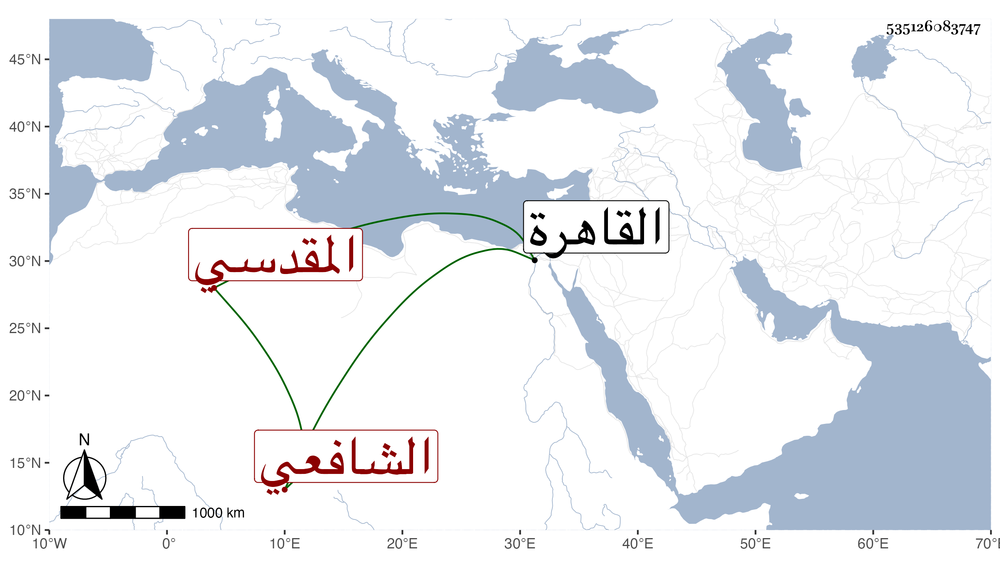

0902Sakhawi.DawLamic.ITO20230111-ara1.EIS1600.535126083747
Biography ID: 535126083747
إبراهيم بن محمد بن خليل بن أبي بكر بن محمد أبو المعالي بن الشمس المقدسي الشافعي الآتي أبوه ويعرف بابن القباقبي . ولد وقرأ على الزين ماهر وأخذ الفقه عن العلم البلقيني والأصول عن المحلى والقراآت عن أبيه وقدم القاهرة غير مرة ومما كتبته من نظمه :
| يا نفس كفى كفى ما كان من زلل | فيما مضى واجهدي في صالح العمل |
| وعن هواك اعدلي ثم اعذلي وعظي | بمن مضى واغنمي الطاعات واعتدلي |
| ولا تغرنك الدنيا وزينتها | فإنها شرك الأكدار والعلل |
| ما أضحكت يومها إلا وفي غدها | أبكت فكوني بها منها على وجل |
| فتلك دار غرور لا بقاء لها | ولا دوام لدانيها على أمل |
| أين القرون التي كانت بها سلفت | كأنها لم تكن في الأعصر الأول |
| فلازمي كل ما لله فيه رضا | واستمسكي ... بالتقى ... في القول والعمل |
| فمن أطاع سعيد عند خالقه | في جنة الخلد في حلى وفي حلل |
وقوله :
| ما خلى من حب ليلى كمن لم | يتخذ في الورى رواها خليلا |
| كم طوى البيد في هواها وأضحى | لا يراعي في العذل عنه الخلي لا |
